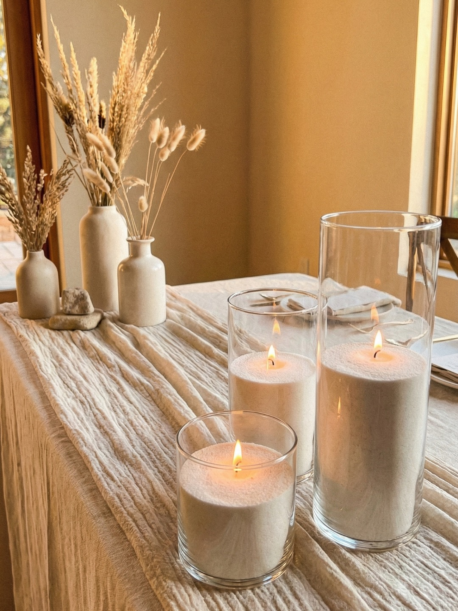

How to Pack, Transport, and Return Wedding Candles Without Mess
April 19, 2026
Worrying about spills, wax mess, or awkward pack-down is very common, especially if you are planning a DIY wedding. The good news is that the process is usually much simpler than people expect. The main thing is to keep it calm, keep everything upright, and avoid rushing.
Lustre Hire is a DIY candle hire business in Perth, with pickup from Bull Creek. Standard hire includes pickup the day before your event and return the day after, which gives you a practical window to collect, style, repack, and return everything step by step.
Planning the practical side too? You can check availability and plan your pickup here.
Before the event: pickup and transport tips
A smooth return usually starts with a smooth pickup. A little planning before collection can make the whole process feel easier from the start.
Clear space in your car before pickup: Make sure the boot and any needed back-seat space are ready before you arrive.
Load candles carefully: Place them in the car properly rather than trying to squeeze everything in quickly at the last minute.
Keep them upright: This is one of the simplest ways to help prevent shifting or mess during transport.
Avoid stacking them carelessly: Keeping each item secure is usually better than piling things on top of each other.
Drive smoothly: There is no need to rush. A steady drive is always better for packed event items.
Plan pickup so you have enough time: A relaxed collection is much easier than trying to fit it into a tight schedule.
If transport space is something you are still thinking through, our post on whether wedding candles fit in a normal car is a helpful starting point.
On the day: how to avoid mess during setup
Setup is usually very manageable when you keep it simple and avoid moving things around too much once they are in place.
Place candles on stable surfaces: Tables, bars, welcome tables, and other styling areas should feel level and secure before you begin.
Set them out calmly before guests arrive: Giving yourself enough setup time makes a big difference.
Avoid moving them around too much once placed: Constant repositioning tends to create more fuss than benefit.
Think through your layout before lighting them: A clear plan helps you work more calmly and keeps the styling feeling intentional.
If you want a quick overview of the broader process, you can also review how it works before the event day arrives.
After the event: what to do first
When the night is over, the best approach is to slow down and follow the same simple order each time.
Blow out all candles fully: Make sure every candle is properly extinguished before you start packing.
Allow the wax to cool: Do not rush straight into packing hot candles.
Keep everything upright during pack-down: This helps reduce shifting and keeps the process tidy.
Those steps match the existing Lustre Hire return flow and are usually enough to keep things straightforward.
How to repack them properly
Repacking is mostly about being methodical. You do not need to overthink it, but it is worth taking a few extra minutes to do it properly.
Use the original packaging or inserts: The original packaging is there for a reason, so it is the best place to start.
Place each candle back securely: Put each item back where it fits rather than dropping things in loosely.
Keep vessels upright: This continues to matter during repacking just as much as during transport.
Pack methodically: A steady, one-by-one approach is usually easier than throwing everything in quickly.
Double check you have all pieces before leaving the venue: A quick final look can save you stress later.
If you want the official step-by-step version too, our How to Return page covers the same core process clearly.
What helps prevent spills or mess
A few small habits do most of the work here:
• Allow enough cooling time
• Keep candles upright
• Do not overhandle them
• Use the original packaging
• Plan return transport before the event day
None of this needs to be complicated. It is mostly about slowing down and following the same simple sequence.
The good news: you do not need to clean them
One of the easiest parts of the process is that you do not need to clean the candles after use. Customers handle pickup, transport, setup, repacking, and return, but Lustre Hire handles the cleaning after return.
That means your job is simply to blow them out, let the wax cool, repack them carefully, and return them at the agreed time. You do not need to add a full cleaning job to your post-wedding list.
Final reassurance
It is very easy to overthink the logistics side when you have not done it before, but in practice the process is usually very manageable when you take it one step at a time.
If you would like to keep the process simple from the start, the next step is to check your date, get a quote, and book online when you are ready.
Ready to plan your pickup?
Check your date, get a quote, and work out a candle setup that feels straightforward to collect and return.
Check Availability